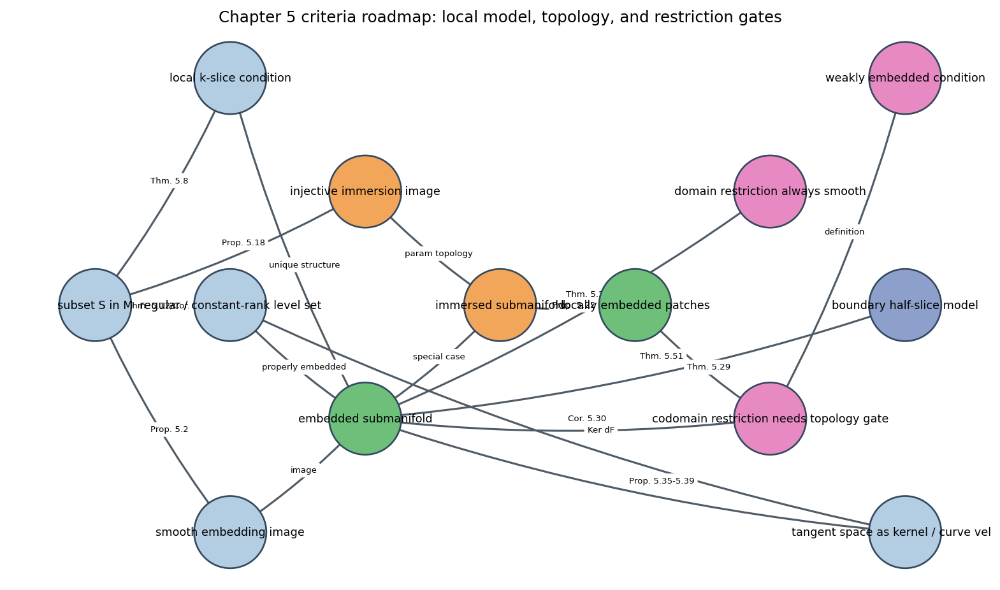

Source Span
Printed pages 98-124.
Central Question
When does a subset of a manifold inherit a smooth manifold structure that behaves correctly?
Chapter Checks
Regular values, tangent kernels, restriction gates, boundary signs, and rank-drop parameters.
